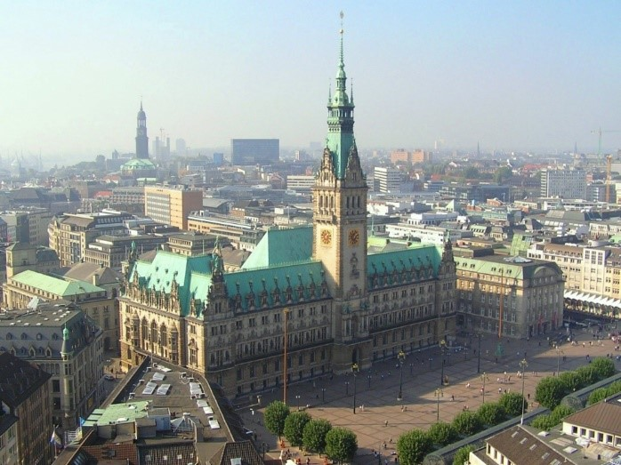
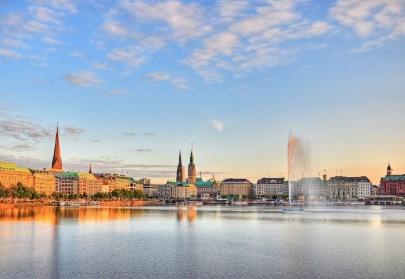
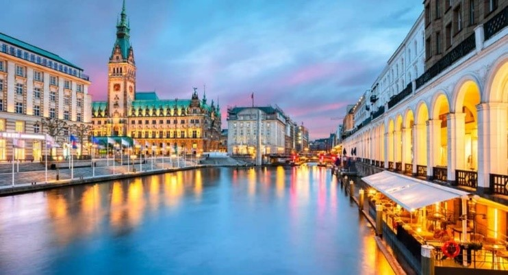
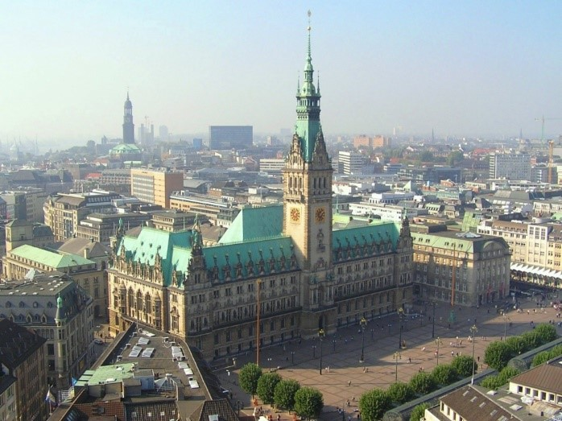
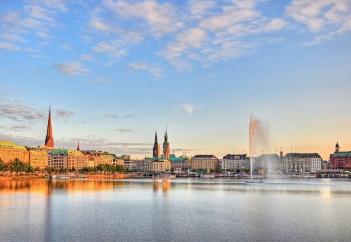
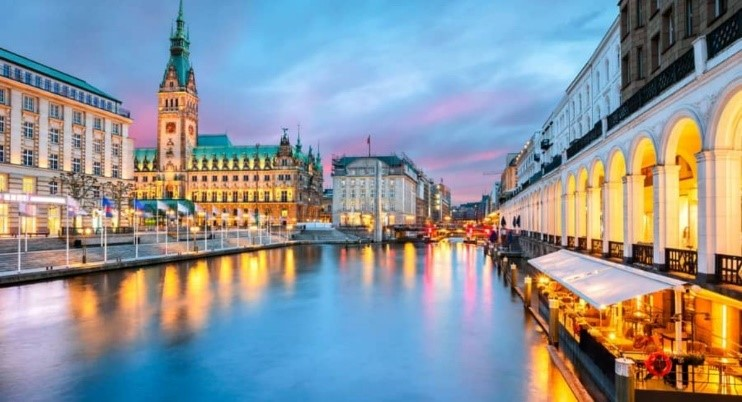

Thành phố cảng Hamburg
 





• Được thành lập bởi Frederick I tại Hamburg, Đức, trên sông Elbe. Cảng có cự ly 110 km từ cửa sông Elbe đổ về Biển Bắc. Cảng Hamburg đã thúc đẩy sự phát triển của Hamburg trở thành một thành phố hàng đầu về thương mại với các giai cấp tư sản giàu có và nổi danh khiến nó mang tên gọi “Cửa ngõ vào thế giới” của Đức. Thành phố này có rất nhiều trung tâm thương mại cao cấp, là nơi ở của nhiều nghệ sĩ Đức nổi tiếng. Các điểm tham quan nổi tiếng tại đây có thể kể đến là Tòa thị chính (Hamburger Rathaus) với công trình kiến trúc theo lối Baroque làm bằng đá sa thạch được xây dựng công phu đến từng chi tiết, phía trước khuôn viên là quảng trường rộng có trang trí những bức tượng lớn.
• Hamburg nổi tiếng với nhiều viện bảo tàng, mỗi bảo tàng lại có những nét đặc trưng riêng như bảo tàng Kunsthalle Hamburg, bảo tàng Hàng Hải,... cùng với đó là những bức tranh nghệ thuật đường phố. Speicherstadt, hay còn gọi là “Thành phố của những nhà kho”, là một di sản thế giới được UNESCO công nhận tại Hamburg. Nơi đây thu hút du khách bởi mê cung các nhà kho gạch đỏ cùng những kênh đào hẹp, mang đậm dấu ấn lịch sử từ thế kỷ 19.